A 4-bit accumulator is a sequential circuit that updates a running sum on every clock cycle by adding in the current input, with overflow ignored. I built mine by instantiating four copies of a 1-bit accumulator bitslice — a half adder plus a resettable register — that I had already designed and laid out transistor-by-transistor in an earlier lab. This lab was about connecting four of those bitslices into a working 4-bit ripple-carry adder and carrying it all the way through schematic capture, simulation, physical layout, DRC/LVS verification, post-layout simulation, power characterization, and timing analysis to find the chip's maximum clock frequency.
I created a symbol view of the 1-bit bitslice from the earlier lab, then instantiated it four times at the top level with no individual transistors visible. The RST and PHI inputs are shared across all four bitslices, and the carry-out of each stage feeds the carry-in of the next, forming the ripple-carry chain.
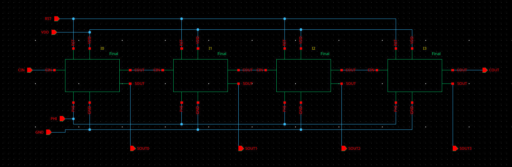
I built a test sequence from the 8 digits of my student ID, resetting the flip-flops and then stepping the accumulator through 8 cycles, comparing the resulting SOUT[3:0] and COUT against a hand-computed table. I simulated the schematic netlist at 500MHz using HSPICE with a vector file generated from that sequence.
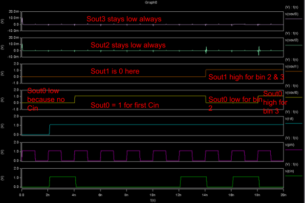
The outputs matched the table exactly — SOUT settled at the correct running sum after each clock edge, and COUT stayed low throughout since the accumulated value never overflowed 4 bits during the test sequence.
The layout consists of four instances of the bitslice layout from the earlier lab, placed side-by-side and connected purely by abutment — no additional top-level wiring. VDD, GND, PHI, and RST connect automatically across bitslice boundaries, as do the carry-out/carry-in pairs between adjacent stages. The only new content at this level is the pin labeling for the 4-bit inputs and outputs.
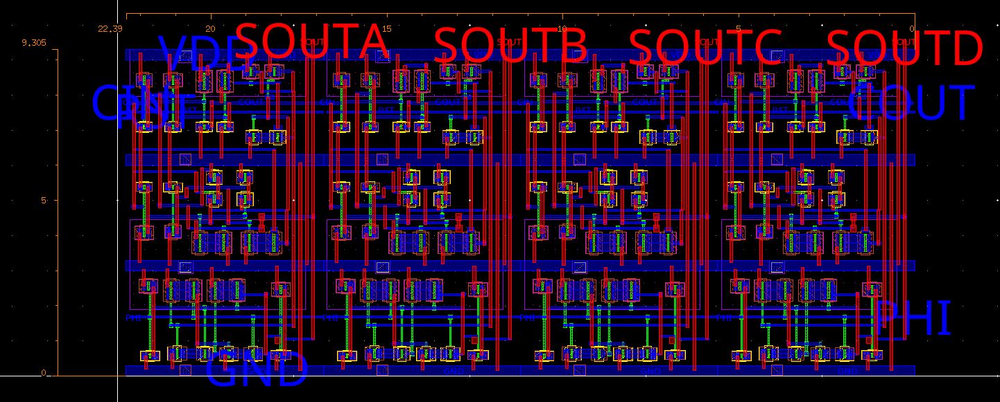
One adjustment was needed: the CIN and PHI routing didn't extend to the same width as the VDD and GND rails by default, so I extended them slightly to line up cleanly at the abutment boundary. The image below is a zoomed-in view showing RST connecting by abutment between two bitslices — I measured its width at 22.4 μm with the ruler tool.
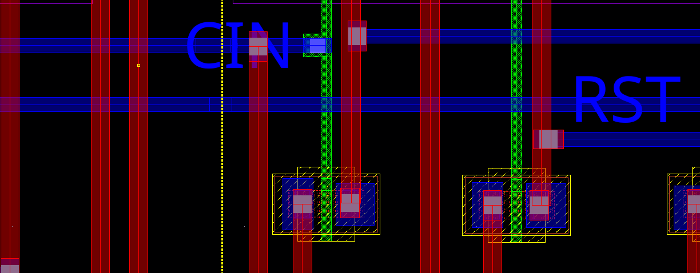
I ran Pegasus for both design rule checking and layout-vs-schematic verification. The layout came back with zero rule violations, and LVS confirmed the extracted layout netlist matches the schematic exactly.
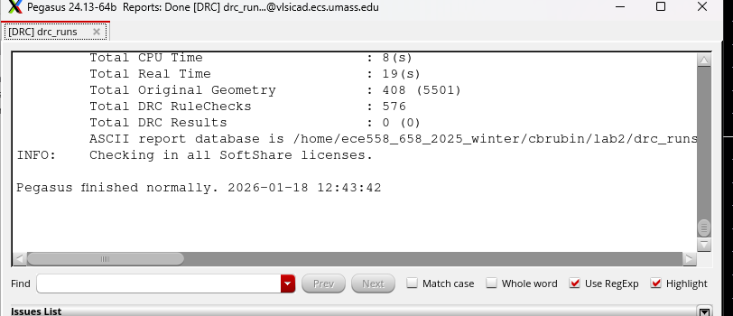
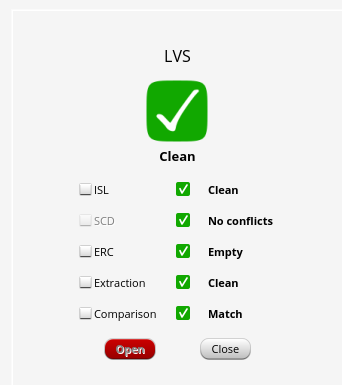
After parasitic extraction, I re-ran the same test-sequence simulation against the post-layout netlist to confirm the design still functioned correctly with real interconnect parasitics included.
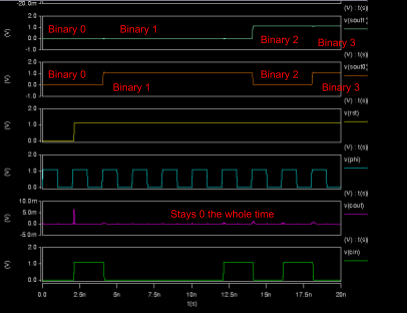
I measured average power at 600MHz, 800MHz, and 1000MHz with the nominal 1.1V supply, then fit the results to extract Pdynamic and Pstatic. I then repeated the measurement at a reduced 0.9V supply to see how much power scaled down.
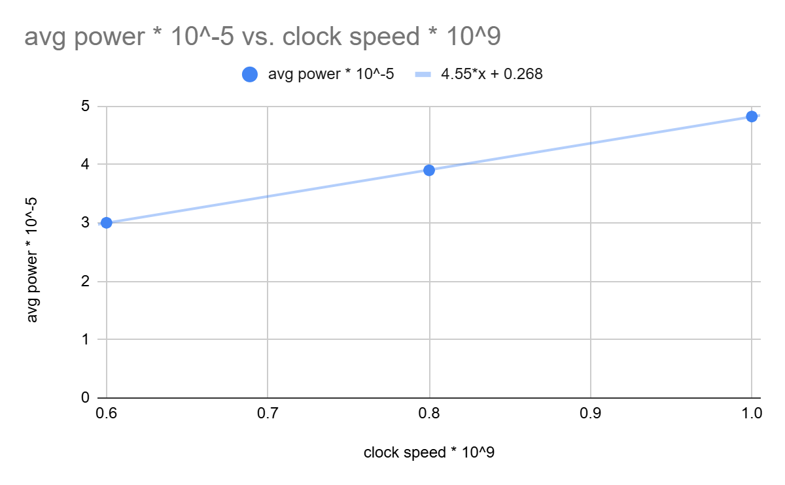
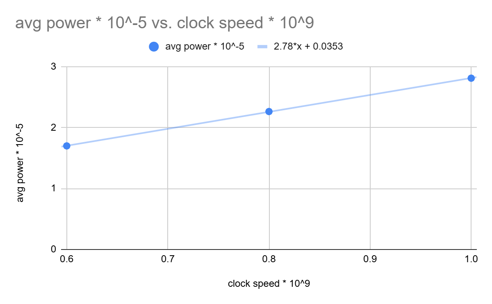
Since dynamic power scales with VDD², dropping from 1.1V to 0.9V predicted a switching-power reduction to about 66.9% of its original value. The measured reduction came out to 63.6% — close to the calculated figure. Less energy is drawn from the supply on each transition, but since the circuit still needs the same number of transitions, the net effect is lower power for the same operation, not just a longer runtime at reduced performance.
To find the highest frequency the post-layout design could run at reliably, I reset the accumulator and held CIN high, causing SOUT[3:0] to increment through all 16 values (including overflow) every cycle. The suspected critical path was the carry chain from Q0 in the LSB to D3 in the MSB, but I verified it experimentally by sweeping the clock period in 10ps steps until I found the boundary between correct and incorrect operation.
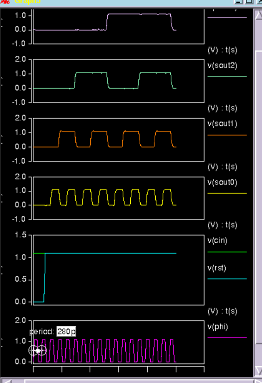
At a clock period of 270ps — just 10ps shorter — a setup time failure shows up on the carry path. In the waveform below, SOUT3 fails to settle before the next rising edge, visibly glitching around the cycle where the carry has to ripple all the way from Q0 to D3.
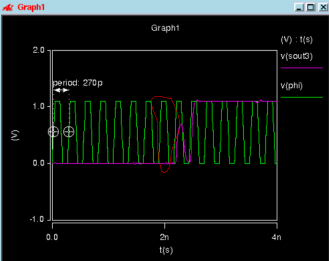